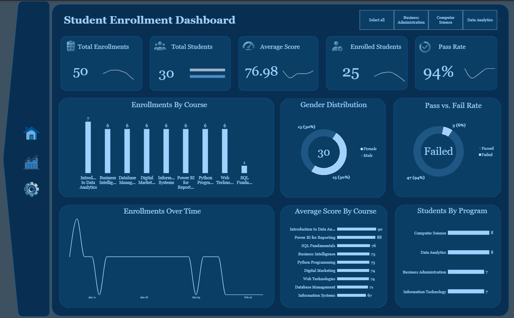
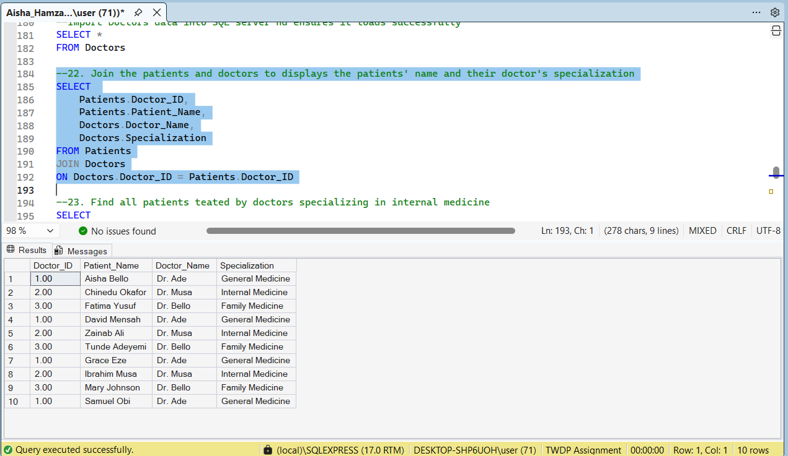
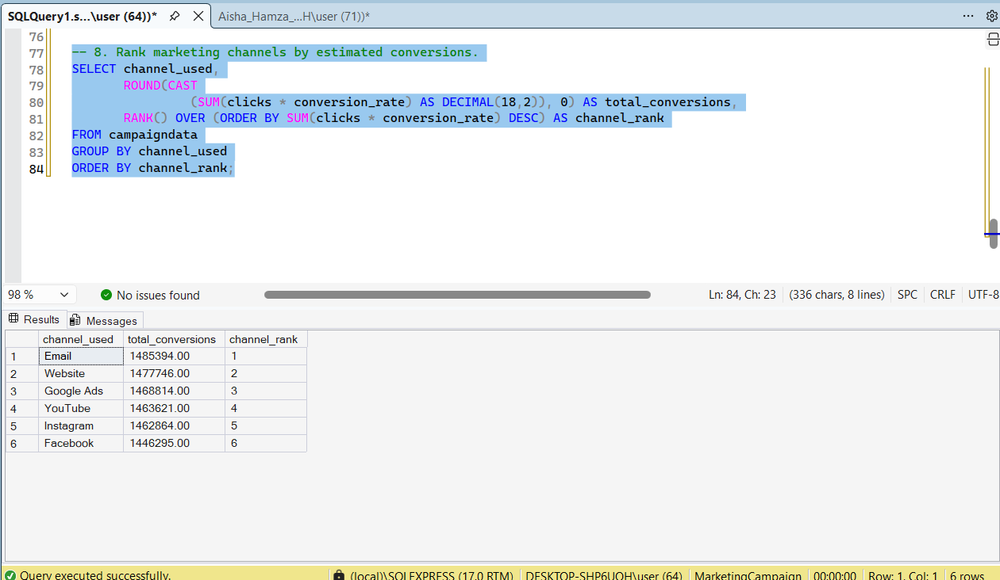
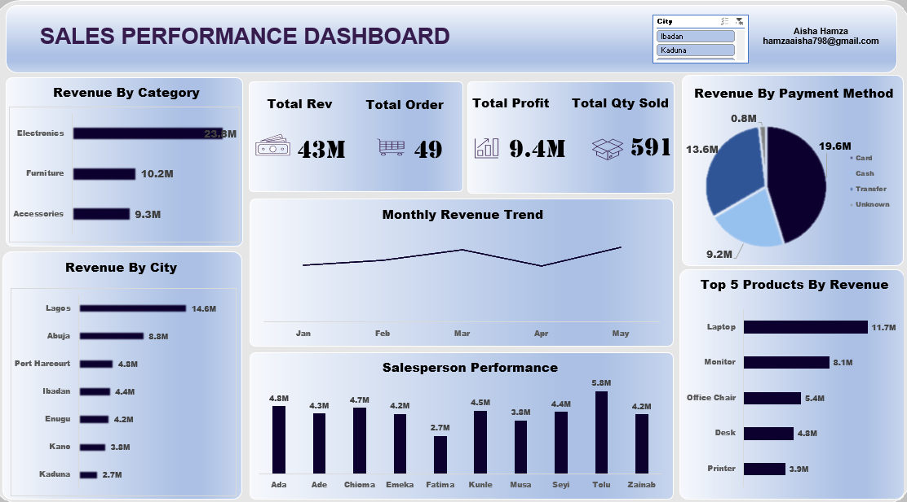
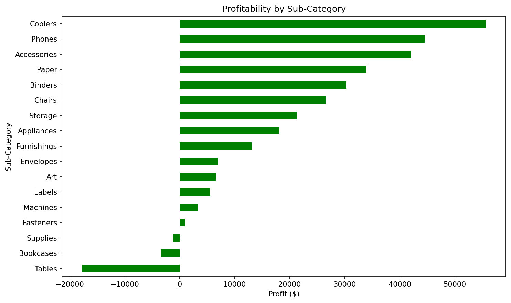

This project analyses student enrollment, scores and attendance across four programs and ten courses. I cleaned three raw datasets in Power Query, recovering missing records from patterns in the data, and built a star-schema model with DAX measures. The result is a two-page interactive Power BI dashboard that tracks course uptake, average scores and pass rates. It showed that Data Analytics students outscore Information Technology students by about 18 points, that all three failed enrollments were in just three courses, and that five registered students never enrolled.


Using SQL Server, I analysed a hospital dataset of 10 patients and 3 doctors by writing 25 queries covering filtering, aggregation, string and date functions, CASE logic and table joins. Scheduled admissions stayed 6.5 days on average against 3.0 days for emergencies, and the three longest stays were all chronic cases (diabetes or hypertension). Dr. Ade treated the most patients (4) and had the longest average stay (5.0 days). The results point to planning bed capacity around scheduled admissions and following up older chronic patients earlier.

Using SQL Server, I analysed a marketing dataset of 200,005 campaigns with 8 queries covering reach, ROI, engagement, click-through rate, cost per conversion and channel performance. The overall CTR was 9.98%, and 160 campaigns tied for the top ROI of 8.0. Email led on total estimated conversions, but every channel averaged about 44 conversions per campaign, so the channels performed almost the same. The analysis also showed that totals can mislead when group sizes differ.

Using Microsoft Excel, I analysed a sales dataset of 49 orders across 7 cities with 14 PivotTables and a City slicer dashboard covering revenue, profit, products, salespeople, payment methods and monthly trends. The company earned ₦43.25M in revenue and ₦9.37M in profit, a 21.7% margin. Electronics led on revenue with 55%, but made only 40% of profit, while Accessories earned a 36% margin. Laptops were the top product, yet had the lowest margin at 10.9% because of heavy discounting. The analysis also showed that revenue rankings can mislead when margins differ.

Using Python, I analysed a retail superstore dataset of 9,994 sales transactions covering sales, profit, product categories, discounts and regions. Total sales were $2,296,195.59 and total profit was $286,241.42. Technology led on revenue, while Furniture had the lowest profit despite $741,999 in sales. The West region led with 31.6% of sales and 37.8% of profit, while Central made 21.8% of sales but only 13.9% of profit. Tables generated high sales but negative profit, and discounts did not boost sales but reduced profit. The analysis also showed that high sales do not always mean high profit.

I analysed the email network of 1,005 employees across 42 departments to find who the key communicators are, how the organisation clusters and where information gets stuck. Using Python, NetworkX and scikit-learn, I measured communities, bridges, information flow and unusual behaviour. The main finding is that a group of just 22 people in one department sits at the centre of the network, holding the top five email receivers and six of the top ten bridges.
I analysed polling unit data from Kwara State to find unusual voting patterns that deserve a closer look. Using Python and Tableau, I geocoded the polling units and then applied DBSCAN clustering, Local Moran’s I, Getis-Ord Gi* hot spot analysis and Isolation Forest. DBSCAN flagged fewer outliers as the search radius grew (771 at 500m, 579 at 1km, 448 at 2km). Moran’s I singled out two polling units, ONIYEYE OPEN SPACE and LAODU 1 OPEN SPACE, while Isolation Forest and Getis-Ord Gi* flagged none, so the irregularities look local rather than widespread. The project also includes maps and charts of votes and registered voters by LGA. Flagged units are leads for audit, not proof of malpractice.